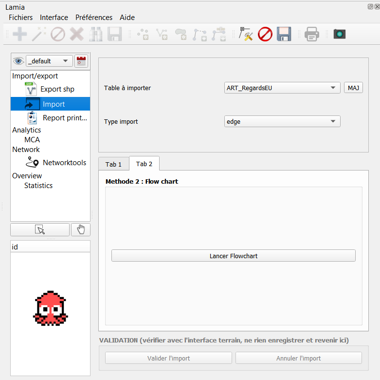
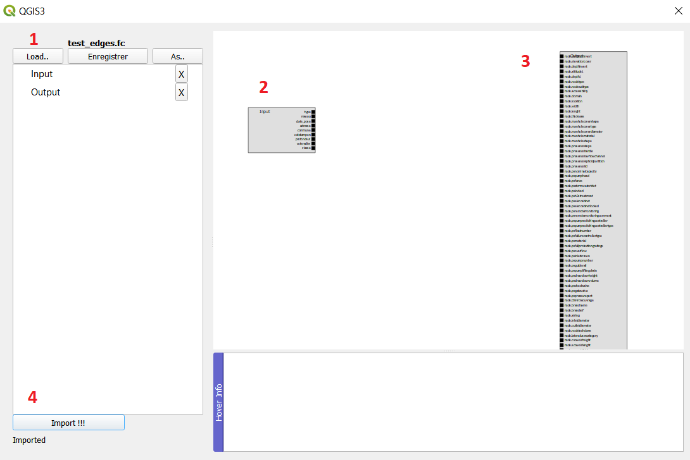
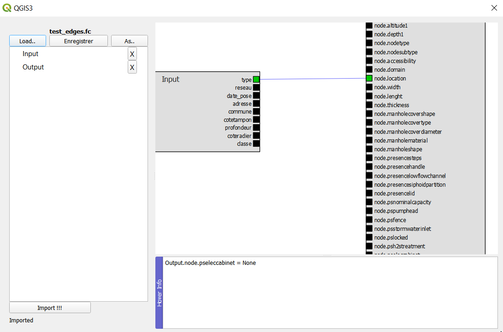
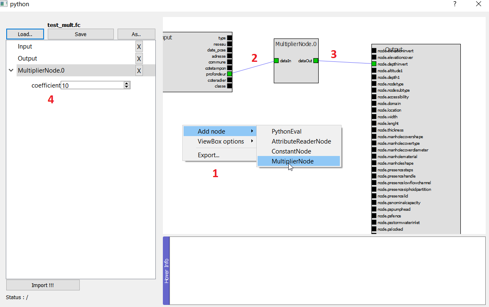
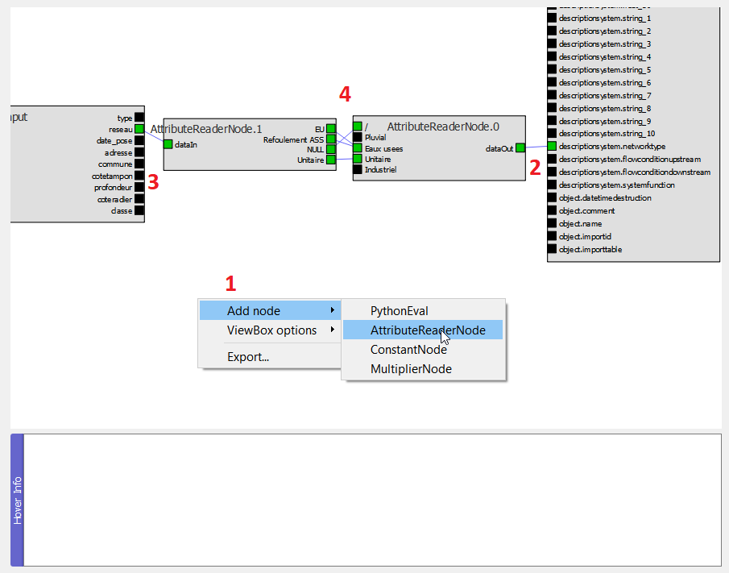
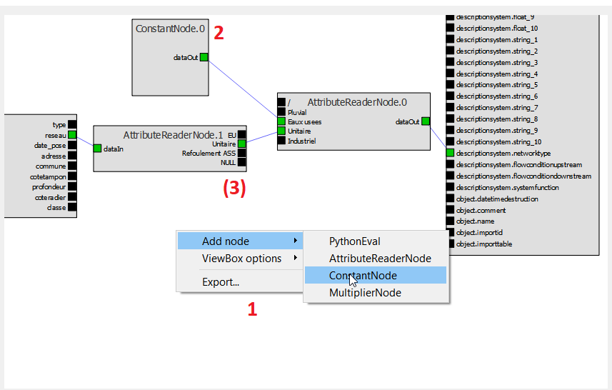
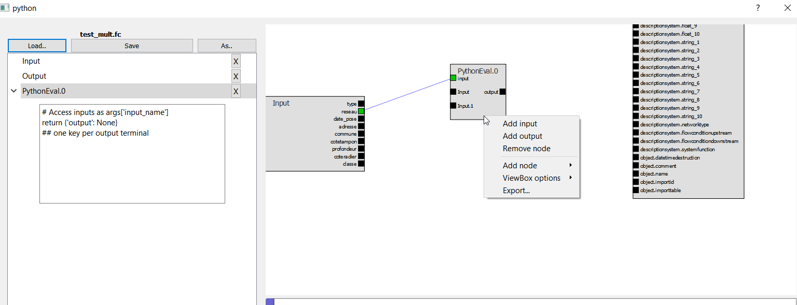

Import de données dans Lamia¶
Lancement du module¶
1 - Se rendre dans l’interface Post-traitement - onglet Import
2 - Charger la table à importer dans QGIS
Cliquer sur « MAJ » et le nom de la table à importer apparaît dans le menu déroulant. La selectionner.
3 - Choisir vers quelle type de table lamia l’import doit être fait dans le menu déroulant « Type import »
Choisir « edge » pour des tronçons, « node » pour des noeuds, etc..
4 - Cliquer sur Lancer Flowchart pour faire appraître la fenetre d’import.
Utilisation de la passerelle d’import¶
Vous arrivez dans l’interface d’import. On y trouve :
1: la barre permettant la sauvegarde d’une configuration(As..) et le chargement d’une configuration (Load…)
2: Le rectangle représentant les colonnes de la table à importer
3 : Le rectangle représentant les colonnes de la table de destination
4 : le bouton pour réaliser l’import
Principe¶
La logique générale est de cliquer sur une colonne de la table à importer et de la diriger vers une colonne de la table destination :
Cette action permet de remplir la colonne de la table de destination avec exactement les valeurs de la table d’origine.
Transformation des valeurs de la colonne d’origine¶
Néanmoins, bien souvent, les valeurs de la colonne de la table d’origine n’ont pas les valeurs voulues pour la table de destination :
Chiffres avec la mauvaise unité (mm au lieu de m)
Valeurs de champs ne correspondant pas au champs Lamia (par exemple le materiau “Beton armé” de la table d’origine correspon au matériau “Béton” de la table destination)
Valeur non renseignée dans la table d’origine mais à renseigner dans la table de destination
Autres modifications …
Nous allons donc utiliser des « noeuds » intermédiaires entre la colonne de la table d’origine et la colonne de la table de destination pour réaliser les transformations voulues
Convertion d’éléments numériques¶
Les étapes sont les suivantes :
1 : Ajouter le noeud « Mulltiplier »
Faire un click droit dans l’espace des rectangles de table et choisir « Add Node » et « Multiplier »
2 et 3 : Connecter le noeud Multiplier aux tables
Connecter l’entrée du noeud à la colonne de la table d’origine et la sortie à la colonne de la table de destination
4 : Choisir le coefficient multiplicateur
Faire comme indiqué dans la figure ci dessus.
Convertion des valeurs de champs¶
Les étapes sont les suivantes :
1 : Ajouter le noeud « AttributeReader »
Faire un click droit dans l’espace des rectangles de table et choisir « Add Node » et « AttributeReader »
2 : Connecter le noeud à la colonne de la table de destination
Lors de la connection, l’entrée du noeud prend automatiquement les valeurs possibles de la colonne de la table de destination
3 : Créer un nouveau noeud et connecter son entrée à la colonne de la table d’origine
Lors de la connection, la sortie du noeud prend automatiquement les valeurs lues dans la colonne de la table d’origine
4 : Connecter les 2 noeuds « AttributeReader » selon les convertions voulues
Ajout d’une valeur constante¶
Les étapes sont les suivantes :
1 : Ajouter le noeud « ConstantNode »
Faire un click droit dans l’espace des rectangles de table et choisir « Add Node » et « ConstantNode »
2 : Connecter le noeud au noeud AttributeReader
3 : (Facultatif) : Réaliser des exceptions
Dans le cas de la figure ci dessus, toutes les valeurs seront « eaux usées », sauf dans le cas où la valeur dans la table d’origine est « Unitaire »
Transformation autre¶
Il est possible de coder la transformation en python. Pour cela , créer un noeud « Pythoneval ».
Le code est à mettre dans la zone de saisie du noeud à gauche.
Pour coder, il faut savoir :
que les données d’entrées sont accessibles via la variable args[“nom_de_la_connection_d_entree”].
Dans la figure , on accede aux valeurs de de l’entrée “input” via la variable args[“input”] On peut créer autant d’entrée que l’on veut dans le noeud Python eval.
que les données de sortie doivent être retournée dans un dictionnaire dont la clé correspond au nom de la sortie et les valeurs sont les valeurs calculées.
Ainsi, un code minimal de transformation (par exemple multiplier les valeurs d’entrée) est :
outputkey = 'output'
outputvals = []
for element in args['input']:
outputvals.append(element*100)
return {outputkey: outputvals}
ou pour modifier un texte :
outputkey = 'output'
outputvals = []
for element in args['input']:
outputvals.append(str(element) + '_test')
return {outputkey: outputvals}

{kind=link}
{kind=link}
{kind=link}
{kind=link}
{kind=link}
{kind=link}
{kind=link}